install.packages("ggplot2")제2장 ggplot2를 활용한 데이터 시각화
앞 장에서는 자료의 중심과 산포를 요약하고, R의 기본 그래픽 함수로 변수의 분포와 관계를 살펴보았습니다. 이 장에서는 같은 분석 목적을 ggplot2 패키지의 문법으로 구현합니다. 자료, 미적 요소, 도형을 구분하여 지정하고, 필요한 표현 요소를 추가하는 방식으로 그래프를 구성합니다.
실습에는 ggplot2에 포함된 자동차 연비 자료인 mpg를 사용합니다. 산점도, 막대그래프, 상자그림을 작성하면서 ggplot()의 기본 구조를 익히고, 집단별 비교와 요약 통계의 시각화로 확장합니다. 마지막으로 같은 문법을 스포츠 측정 자료에 적용합니다.
2.1 실습 준비
2.1.1 패키지 설치와 불러오기
패키지(package)는 특정 작업에 필요한 함수와 자료를 모아 제공하는 단위입니다. ggplot2는 일관된 문법으로 다양한 그래프를 작성할 수 있도록 지원하는 시각화 패키지입니다. 패키지를 사용하려면 설치와 불러오기 과정을 구분해야 합니다.
| 작업 | 코드 | 실행 시점 |
|---|---|---|
| 설치 | install.packages("ggplot2") |
처음 한 번. 인터넷이 필요합니다. R을 새로 설치한 경우 다시 필요할 수 있습니다. |
| 불러오기 | library(ggplot2) |
새로운 R 작업 세션을 시작할 때마다 실행합니다. |
패키지가 설치되어 있지 않은 경우 Console에서 다음 코드를 실행합니다. 설치에는 인터넷 연결이 필요하며, 교재를 생성하는 과정에서는 설치 코드를 자동 실행하지 않습니다.
설치된 패키지는 library()를 통해 불러옵니다. 이 과정은 새로운 R 세션에서 해당 패키지를 사용할 때마다 필요합니다.
library(ggplot2)2.1.2 실습 자료의 구조와 변수
mpg는 ggplot2 패키지에 포함된 자동차 연비 자료입니다. 패키지를 불러오면 별도의 파일 입력 없이 사용할 수 있습니다.
이 자료는 행과 열로 구성된 데이터프레임(data frame) 형태입니다. 행은 관측 한 건을, 열은 관측한 항목인 변수를 나타냅니다. mpg에는 차량 사양별 연비 관측 234행과 변수 11개가 포함되어 있습니다. 동일한 자동차 모델이 여러 행에 나타날 수 있으므로 행 수와 모델 수는 구분해야 합니다.
head(mpg) # 첫 6행을 봅니다.# A tibble: 6 × 11
manufacturer model displ year cyl trans drv cty hwy fl class
<chr> <chr> <dbl> <int> <int> <chr> <chr> <int> <int> <chr> <chr>
1 audi a4 1.8 1999 4 auto(l5) f 18 29 p compa…
2 audi a4 1.8 1999 4 manual(m5) f 21 29 p compa…
3 audi a4 2 2008 4 manual(m6) f 20 31 p compa…
4 audi a4 2 2008 4 auto(av) f 21 30 p compa…
5 audi a4 2.8 1999 6 auto(l5) f 16 26 p compa…
6 audi a4 2.8 1999 6 manual(m5) f 18 26 p compa…dim(mpg) # 행 개수, 열 개수 순서로 나옵니다.[1] 234 11names(mpg) # 사용할 수 있는 열 이름을 봅니다. [1] "manufacturer" "model" "displ" "year" "cyl"
[6] "trans" "drv" "cty" "hwy" "fl"
[11] "class" head()는 자료의 앞부분을, dim()은 행과 열의 수를, names()는 변수명을 출력합니다. dim(mpg)의 결과인 234 11은 234행과 11열을 의미합니다. 이 장에서 사용하는 주요 변수는 다음과 같습니다.
| 열 이름 | 뜻 | 값의 종류 | 그래프에서 읽는 방법 |
|---|---|---|---|
displ |
엔진 배기량 | 숫자, L | 값이 클수록 배기량이 큽니다. |
hwy |
고속도로 연비 | 숫자, mile/gallon | 같은 연료로 가는 거리이며 값이 클수록 연비가 높습니다. |
cty |
도심 연비 | 숫자, mile/gallon | hwy와 단위가 같습니다. |
class |
차종 | 범주 | compact, suv 같은 이름입니다. |
drv |
구동방식 | 범주 | f: 전륜, r: 후륜, 4: 사륜입니다. |
숫자형 변수는 크기를 비교할 수 있는 측정값이고, 범주형 변수는 집단을 구분하는 이름입니다. drv의 4는 사륜구동이라는 이름이며 수량 4를 뜻하지 않습니다. mpg의 연비 단위는 국내에서 흔히 쓰는 km/L와 다릅니다.
참고:
head(mpg, 10)과 같이 두 번째 인자를 지정하면 앞의 10행을 출력할 수 있습니다.
2.2 ggplot2 기본 문법
산점도(scatter plot)는 두 수치형 변수의 관계를 나타내는 그래프입니다. 각 관측의 두 측정값을 가로축과 세로축의 좌표로 사용하여 점으로 표시합니다. 여기서는 배기량(displ)과 고속도로 연비(hwy)의 관계를 살펴봅니다.
ggplot(data = mpg, mapping = aes(x = displ, y = hwy)) +
geom_point()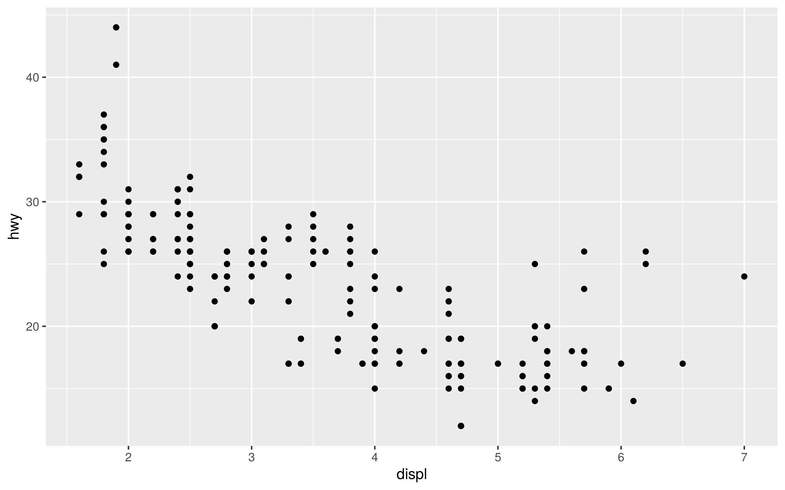
ggplot2의 그래프는 자료, 변수와 시각적 속성의 연결, 표현할 도형을 지정하는 방식으로 구성됩니다. 여기에 필요한 요소를 +로 추가합니다.
| 코드 | 역할 |
|---|---|
ggplot(data = mpg, ...) |
그래프 작성에 사용할 자료를 지정합니다. |
aes(x = displ, y = hwy) |
배기량과 연비를 각각 가로축과 세로축에 연결합니다. |
geom_point() |
관측값을 점으로 표현합니다. |
+ |
도형, 축 이름, 테마 등의 구성 요소를 추가합니다. |
자료의 변수를 위치·색·크기 등의 시각적 속성에 연결하는 것을 매핑(mapping)이라고 합니다. aes()는 이러한 연결을 지정하는 함수입니다. x, y, color 등은 그래프의 미적 요소(aesthetic)에 해당합니다.
aes() 안의 displ, hwy는 mpg의 열 이름이므로 따옴표를 쓰지 않습니다. aes(x = "displ")처럼 쓰면 열의 숫자가 아니라 displ이라는 같은 글자를 모든 행에 연결하게 됩니다.
2.2.1 결과의 해석
오른쪽으로 갈수록 배기량이 크고, 위로 갈수록 고속도로 연비가 높습니다. 전체적으로 오른쪽에 있는 점들이 아래쪽에 많이 놓여 있습니다. 따라서 이 자료에서는 배기량이 큰 관측에서 연비가 낮은 경향을 읽을 수 있습니다. 이 그림만으로 배기량이 연비 변화의 유일한 원인이라고 결론 내리지는 않습니다.
같은 위치의 점은 겹칠 수 있습니다. 자료가 234행이라고 해서 화면에서 점 234개가 각각 구분되어 보이는 것은 아닙니다.
2.2.2 변수 변경
위 코드에서 y = hwy를 y = cty로 변경하면 배기량과 도심 연비의 관계를 확인할 수 있습니다. 동일한 그래프 구조에서 변수명만 변경하여 다른 관계를 분석하는 방식입니다.
이후 예제에서는 ggplot(mpg, aes(...))와 같이 인자 이름을 생략한 표현을 사용합니다. 이는 앞의 코드에서 data =와 mapping =을 생략한 것으로, 기능은 동일합니다.
코드 작성 시 유의사항: 여러 줄로 그래프를 작성할 때는
+를 줄 끝에 배치하며 마지막 줄에는 사용하지 않습니다. Console의 입력 표시가>대신+로 유지되면 괄호나 따옴표가 닫히지 않았거나 명령이 완성되지 않은 경우일 수 있습니다. Esc를 누르면 진행 중인 입력을 취소할 수 있습니다.
2.2.3 색상 지정과 미적 요소의 매핑
2.2.3.1 고정 색상 지정
ggplot(mpg, aes(x = displ, y = hwy)) +
geom_point(color = "steelblue", size = 2, alpha = 0.6)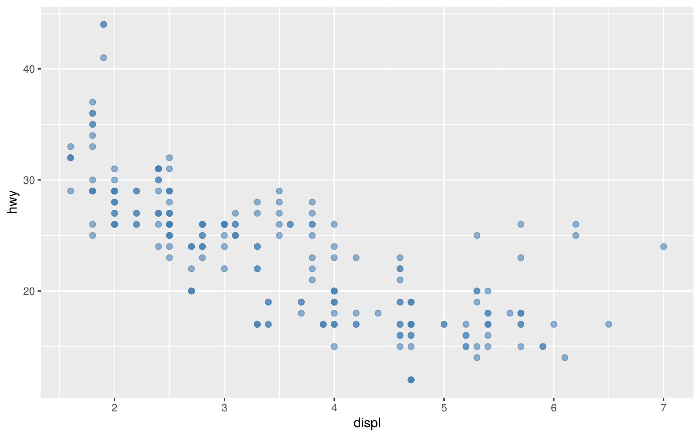
color는 색상, size는 점의 크기, alpha는 불투명도를 지정합니다. alpha는 0이면 완전히 투명하고 1이면 불투명합니다. 점이 겹치는 경우에는 값을 낮춰 관측의 밀집 정도를 확인할 수 있습니다. "steelblue"는 R에서 지원하는 색상 이름입니다.
2.2.3.2 범주형 변수의 색상 매핑
범주형 변수를 색상에 매핑하면 집단별 관측의 분포를 한 그래프에서 비교할 수 있습니다. 다음은 구동방식(drv)에 따라 색상을 구분한 예제입니다.
ggplot(mpg, aes(x = displ, y = hwy, color = drv)) +
geom_point(size = 2, alpha = 0.7)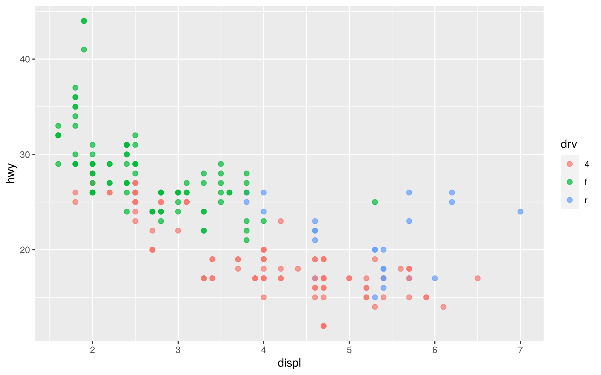
이번에는 color = drv를 aes() 안에 넣었습니다. 각 행의 구동방식을 읽고 그룹에 따라 다른 색을 정하며, 색의 의미를 설명하는 범례도 자동으로 만듭니다.
| 목적 | 쓰는 위치 | 예시 |
|---|---|---|
| 값에 따라 색을 나누기 | aes() 안 |
aes(color = drv) |
| 모든 점에 같은 색 쓰기 | aes() 밖 |
geom_point(color = "steelblue") |
color = drv를 color = class로 변경하면 차종별로 색상이 구분됩니다. 이때 변수명은 따옴표 없이 지정합니다. color = "drv"와 같이 작성하면 변수의 값이 아니라 하나의 문자열을 매핑하게 됩니다.
2.2.4 제목, 축 이름과 범례 설정
그래프에는 분석 대상과 측정 단위가 명확하게 드러나야 합니다. labs()는 제목, 부제, 축 이름, 범례 제목, 자료 출처 등을 지정하는 함수입니다.
ggplot(mpg, aes(x = displ, y = hwy, color = drv)) +
geom_point(size = 2, alpha = 0.7) +
labs(
title = "배기량과 고속도로 연비의 관계",
subtitle = "구동방식별 비교: 4 = 사륜, f = 전륜, r = 후륜",
x = "배기량 (L)",
y = "고속도로 연비 (mile/gallon)",
color = "구동방식",
caption = "자료: ggplot2 패키지의 mpg"
)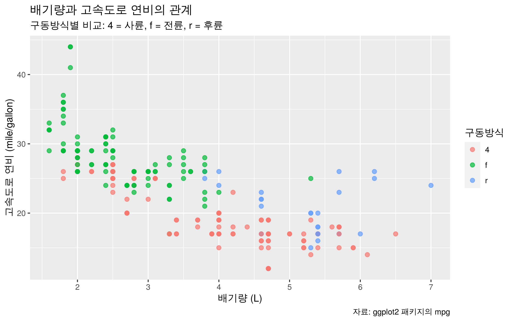
괄호 안에서는 항목을 쉼표 ,로 구분합니다. labs() 안에 들어가는 제목은 글자이므로 따옴표로 감쌉니다. labs(color = "구동방식")은 범례의 제목을 바꾸며 자료 속 4, f, r 값은 그대로 둡니다.
그래프의 변수를 변경하면 제목과 축 이름도 함께 수정해야 합니다. 예를 들어 y = cty를 사용한 경우 세로축 이름을 "도심 연비 (mile/gallon)"로 지정하여 코드와 설명의 일관성을 유지합니다.
2.2.5 테마 설정과 그래프 객체
theme_minimal()은 배경과 눈금선 등 전체 디자인을 간결하게 바꿉니다. theme_bw()는 흰 배경에 테두리가 있는 스타일, theme_classic()은 축 중심의 단순한 스타일입니다.
아래에서는 완성된 그래프를 p라는 이름에 저장합니다. p <-로 저장만 하면 화면에 바로 나오지 않을 수 있으므로 마지막에 p를 실행합니다.
p <- ggplot(mpg, aes(x = displ, y = hwy, color = drv)) +
geom_point(size = 2, alpha = 0.7) +
labs(
title = "배기량과 고속도로 연비",
subtitle = "4 = 사륜구동, f = 전륜구동, r = 후륜구동",
x = "배기량 (L)",
y = "고속도로 연비 (mile/gallon)",
color = "구동방식"
) +
theme_minimal(base_size = 13)
p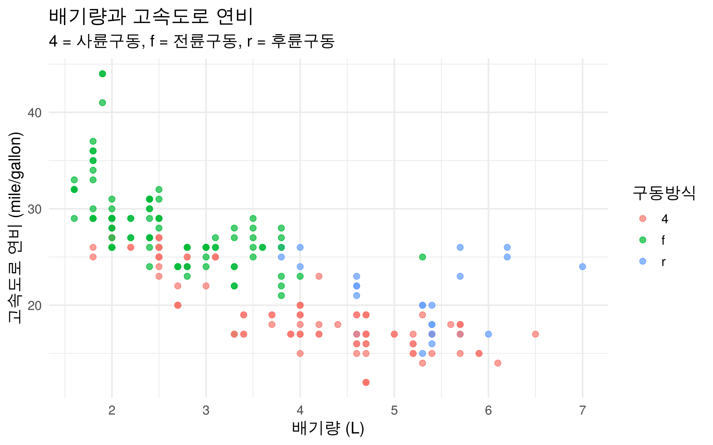
base_size = 13은 기본 글자 크기입니다. 이제 p를 실행하면 같은 그래프를 다시 볼 수 있습니다. p + theme_bw()를 실행하면 저장된 그래프에 다른 테마를 적용한 결과가 나옵니다. p 자체를 바꾸려면 p <- p + theme_bw()처럼 다시 저장해야 합니다.
geom_point()는 관측값의 표현 방식, labs()는 그래프의 설명 문구, theme_*()는 배경과 글자 등 비자료 요소의 서식을 설정합니다. 각 요소는 서로 다른 역할을 하며 +로 연결됩니다.
2.3 그래프 유형과 집단 비교
2.3.1 패싯을 이용한 집단별 비교
여러 집단을 하나의 그래프에 표시하면 관측값이 겹쳐 집단별 특성을 파악하기 어려울 수 있습니다. 패싯(facet)은 자료를 집단별로 나누어 동일한 형식의 그래프를 각각 배치하는 방법입니다. facet_wrap()을 사용하면 범주형 변수의 값에 따라 패널을 구성할 수 있습니다.
ggplot(mpg, aes(x = displ, y = hwy)) +
geom_point(color = "steelblue", alpha = 0.6) +
facet_wrap(~ drv) +
labs(
title = "구동방식별 배기량과 연비",
subtitle = "4 = 사륜구동, f = 전륜구동, r = 후륜구동",
x = "배기량 (L)", y = "고속도로 연비 (mile/gallon)"
) +
theme_minimal()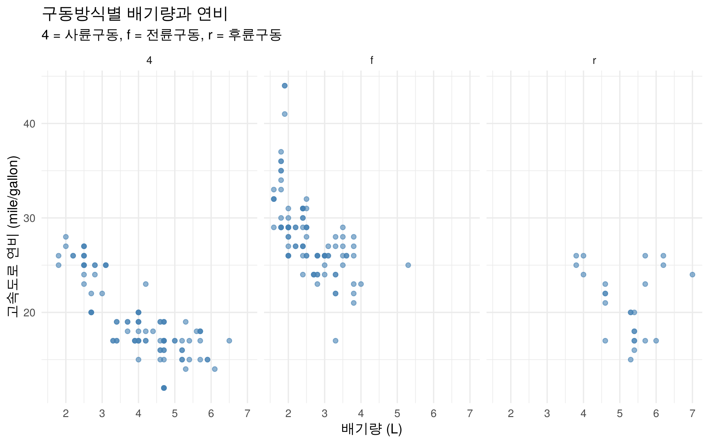
~ drv는 패널을 구분할 변수로 drv를 지정하는 수식 표현입니다. 기본 설정에서는 패널의 축 범위가 동일하므로 집단 간 관측값의 위치와 퍼짐을 비교할 수 있습니다.
facet_wrap(~ class, ncol = 3)으로 변경하면 차종별 패널을 한 행에 세 개씩 배치합니다. 패널을 비교할 때에는 각 집단의 관측 수가 다르다는 점도 고려해야 합니다.
2.3.2 막대그래프를 이용한 도수 비교
막대그래프(bar chart)는 범주별 빈도나 요약값을 막대의 길이로 나타냅니다. 다음 예제에서는 차종별 관측 수를 비교합니다. geom_bar()는 기본적으로 각 범주에 해당하는 행의 수를 계산하므로, 도수를 미리 집계하거나 y를 지정할 필요가 없습니다.
ggplot(mpg, aes(x = class)) +
geom_bar(fill = "steelblue") +
labs(
title = "차종별 관측 수", x = "차종", y = "관측 수 (건)"
) +
theme_minimal()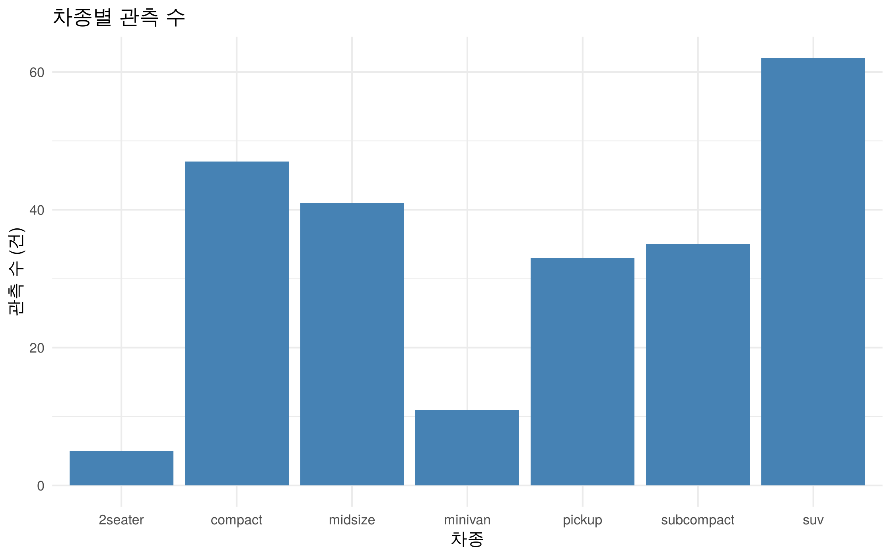
막대의 내부 색은 fill, 테두리 색은 color로 지정합니다. 차종별 내부 색을 나누고 싶다면 aes(x = class, fill = class)로 작성하고 geom_bar()의 고정 fill을 지웁니다.
개수를 숫자로 확인할 때는 table()을 사용할 수 있습니다.
table(mpg$class)
2seater compact midsize minivan pickup subcompact suv
5 47 41 11 33 35 62 mpg$class는 데이터프레임 mpg에서 class 열을 선택하는 표현입니다. 출력 결과에서 suv의 도수는 62입니다. 이 값은 자료에 포함된 관측 수이며, 실제 시장의 판매량이나 보유 대수를 의미하지 않습니다.
x = drv로 변경하면 구동방식별 관측 수를 비교할 수 있습니다. 이 경우 제목과 가로축 이름도 해당 변수에 맞게 수정합니다.
2.3.3 상자그림을 이용한 분포 비교
상자그림(box plot)은 중앙값과 사분위수 등을 이용하여 수치형 변수의 분포를 요약하는 그래프입니다. 집단별 측정값의 중심과 퍼짐을 비교하는 데 사용합니다. 다음은 차종별 고속도로 연비의 분포를 나타낸 예제입니다. x에는 집단을 구분하는 변수, y에는 측정값을 지정합니다.
ggplot(mpg, aes(x = class, y = hwy)) +
geom_boxplot(fill = "lightblue") +
labs(
title = "차종별 고속도로 연비 분포",
x = "차종", y = "고속도로 연비 (mile/gallon)"
) +
theme_minimal() +
theme(axis.text.x = element_text(angle = 45, hjust = 1))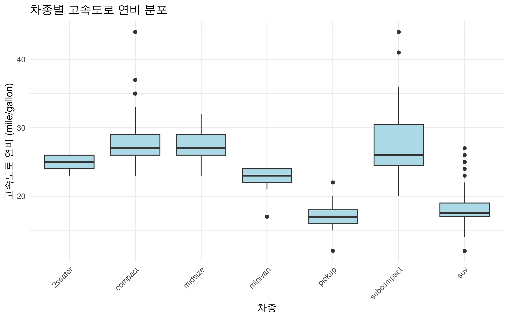
theme(axis.text.x = element_text(angle = 45, hjust = 1))은 가로축 글자를 45도 회전하고 끝을 맞춰 겹침을 줄입니다. 전체 테마 다음에 세부 설정을 추가하는 순서로 쓰면 됩니다.
2.3.3.1 상자그림의 구성과 해석
- 상자 안의 굵은 선: 값을 작은 순서로 놓았을 때 가운데에 해당하는 중앙값입니다. 평균과는 다릅니다.
- 상자의 아래·위 경계: 각각 25%, 75% 지점에 해당하는 사분위수입니다. 상자는 가운데 약 50%의 값이 있는 구간입니다.
- 수염: 상자 아래·위 경계에서 각각 상자 높이(IQR)의 1.5배 이내에 있는 관측 중 가장 먼 값까지 이어집니다. 항상 최솟값과 최댓값인 것은 아닙니다.
- 수염 밖의 점: 위 기준을 벗어난 관측입니다. 값이 상대적으로 멀리 있다는 뜻이며, 오류 데이터라고 단정해 삭제하지 않습니다.
이 그림에서는 suv의 중앙값이 compact보다 낮게 나타납니다. 집단 간 차이는 중앙값뿐 아니라 상자의 높이와 관측 수도 함께 고려하여 해석합니다.
보충 예제: 상자그림과 개별 관측값의 결합
set.seed(2026)
ggplot(mpg, aes(x = class, y = hwy)) +
geom_boxplot(outlier.shape = NA, fill = "lightblue") +
geom_jitter(width = 0.15, height = 0, alpha = 0.35) +
labs(x = "차종", y = "고속도로 연비 (mile/gallon)") +
theme_minimal() +
theme(axis.text.x = element_text(angle = 45, hjust = 1))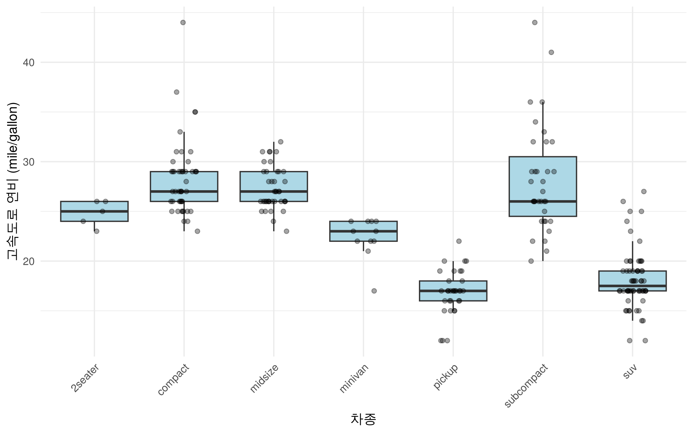
geom_jitter()는 겹친 점을 조금 흩어 표시합니다. height = 0이므로 측정값의 세로 위치는 그대로입니다. set.seed()는 임의로 흩어지는 위치를 재현하기 위한 설정입니다. outlier.shape = NA는 상자그림 자체의 수염 밖 점 표시만 숨깁니다. 뒤에 모든 관측점을 그리므로 같은 관측을 두 번 강조하지 않게 됩니다.
2.4 그래프 저장과 확장
2.4.1 그래프 파일 저장
ggsave()는 그래프 객체를 이미지 파일로 저장하는 함수입니다. 저장한 파일은 보고서나 발표 자료에 사용할 수 있습니다. 다음 예제는 앞의 테마 설정과 그래프 객체에서 생성한 p를 사용합니다.
다음 코드는 내 컴퓨터에서 직접 실행하는 저장 예제입니다. 교재를 렌더링할 때에는 자동 실행하지 않습니다.
getwd() # 현재 작업 폴더를 확인합니다.
dir.create("outputs", showWarnings = FALSE)
ggsave(
filename = "outputs/mpg_scatter.png",
plot = p,
width = 18,
height = 12,
units = "cm",
dpi = 300,
bg = "white"
)dir.create()는 현재 작업 폴더 안에 outputs 폴더를 생성합니다. plot = p는 저장할 그래프 객체를 지정합니다. 예제에서는 가로 18cm, 세로 12cm, 300dpi로 저장합니다. 같은 경로에 동일한 이름의 파일이 있으면 덮어쓰므로, 기존 파일을 유지할 경우 다른 이름을 지정합니다.
저장 결과는 RStudio의 Files에서 outputs/mpg_scatter.png를 열어 확인할 수 있습니다. 상대 경로는 현재 작업 폴더를 기준으로 해석되므로 getwd()로 저장 위치를 확인합니다.
2.4.2 추세선, 요약 통계와 축 설정
2.4.2.1 추세선의 추가
ggplot(mpg, aes(x = displ, y = hwy)) +
geom_point(alpha = 0.5) +
geom_smooth(method = "lm", formula = y ~ x, se = FALSE) +
labs(
title = "배기량과 연비의 전체적인 경향",
x = "배기량 (L)", y = "고속도로 연비 (mile/gallon)"
) +
theme_minimal()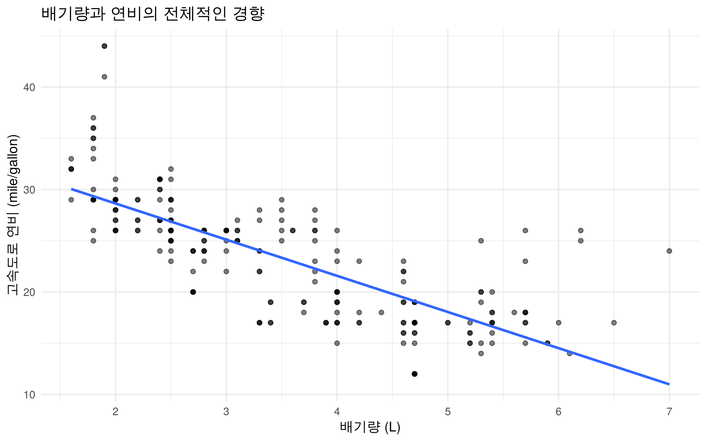
geom_smooth()는 변수 간 관계를 요약하는 추세선을 추가합니다. method = "lm"은 선형모형을 사용하며, formula = y ~ x는 y를 x의 선형관계로 설명하도록 지정합니다. se = FALSE는 신뢰구간 표시를 생략하는 옵션입니다.
se = TRUE로 바꾸면 기본적으로 적합된 평균 반응에 대한 95% 신뢰구간 띠가 표시됩니다. 이 띠가 관측값 95%를 포함한다는 뜻은 아닙니다. 직선이 모든 점을 잘 설명하는지도 함께 살펴보고, 선만 보고 원인과 결과를 판단하지 않습니다.
geom_smooth(method = "loess", formula = y ~ x, se = FALSE)로 바꾸면 이 작은 자료에서 굽은 경향을 살펴볼 수 있습니다.
색과 추세선의 관계:
ggplot()의aes()안에color = drv를 넣으면 뒤에 추가한 추세선도 구동방식별로 나뉩니다. 점만 색으로 구분하고 선은 전체 자료로 하나만 그리려면geom_point(aes(color = drv))에 색 연결을 넣습니다.
2.4.2.2 집단별 평균의 시각화
집단별 평균이나 합계를 시각화하려면 원자료를 먼저 요약해야 합니다. 여기서는 자료 처리 패키지인 dplyr을 이용하여 차종별 평균 고속도로 연비와 관측 수를 계산합니다. 패키지가 설치되어 있지 않은 경우 다음 설치 코드를 먼저 실행합니다.
install.packages("dplyr")library(dplyr)
mpg_sum <- mpg %>%
group_by(class) %>%
summarise(
mean_hwy = mean(hwy),
n = n(),
.groups = "drop"
)
mpg_sum# A tibble: 7 × 3
class mean_hwy n
<chr> <dbl> <int>
1 2seater 24.8 5
2 compact 28.3 47
3 midsize 27.3 41
4 minivan 22.4 11
5 pickup 16.9 33
6 subcompact 28.1 35
7 suv 18.1 62위 코드는 mpg를 차종별로 구분하고, 각 집단의 평균과 관측 수를 계산하여 mpg_sum에 저장합니다. 각 함수와 연산자의 역할은 다음과 같습니다.
| 코드 | 기능 |
|---|---|
%>% |
앞의 결과를 다음 함수의 입력으로 전달하는 파이프 연산자입니다. |
group_by(class) |
같은 차종끼리 묶습니다. |
summarise(...) |
집단마다 요약한 한 행을 만듭니다. |
mean_hwy = mean(hwy) |
hwy의 평균을 계산하고 결과 열을 mean_hwy라고 부릅니다. |
n = n() |
집단의 행 개수를 n이라는 열에 저장합니다. |
.groups = "drop" |
요약 후 집단 묶음을 해제합니다. |
%>%는 데이터를 다음 작업으로 전달하고, 그래프 코드의 +는 그래프 구성 요소를 추가합니다. 서로 바꿔 쓸 수 없습니다. 이 자료의 hwy에는 결측값이 없지만, 다른 자료에 NA가 있다면 원인과 개수를 확인한 뒤 평균에서 제외할지 결정해야 합니다. mean(hwy, na.rm = TRUE)는 결측값을 제외하는 계산이며, n()에는 결측 행도 포함됩니다.
ggplot(mpg_sum, aes(x = class, y = mean_hwy)) +
geom_col(fill = "steelblue") +
labs(
title = "차종별 평균 고속도로 연비",
x = "차종", y = "평균 고속도로 연비 (mile/gallon)"
) +
theme_minimal() +
theme(axis.text.x = element_text(angle = 45, hjust = 1))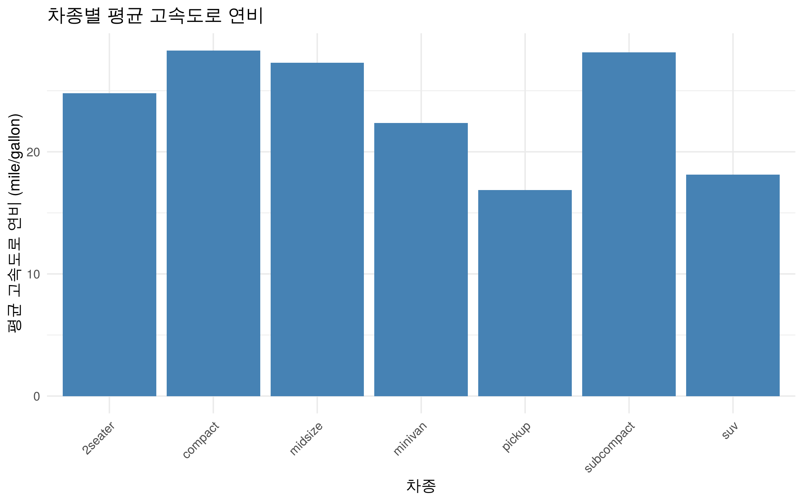
평균 막대그래프는 집단의 중심을 비교하는 데 유용하지만, 집단 내 분포를 보여 주지는 않습니다. 자료의 퍼짐을 함께 검토하려면 상자그림 등 분포를 나타내는 그래프를 병행합니다.
| 시각화 대상 | 함수 | 자료와 축 지정 |
|---|---|---|
| 집단별 개수 | geom_bar() |
원자료, x만 지정 |
| 이미 계산한 평균·합계 등 | geom_col() |
요약표, x와 y 지정 |
보충 예제: 평균에 따른 정렬과 가로 막대그래프
ggplot(mpg_sum, aes(x = mean_hwy, y = reorder(class, mean_hwy))) +
geom_col(fill = "steelblue") +
labs(x = "평균 고속도로 연비 (mile/gallon)", y = "차종") +
theme_minimal()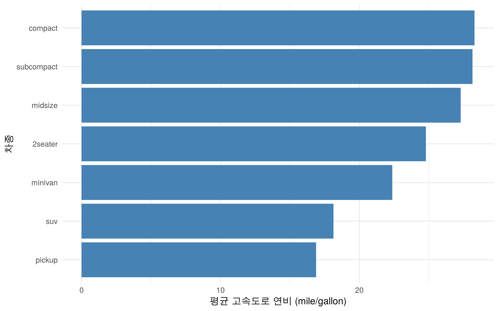
reorder(class, mean_hwy)는 평균 크기에 따라 차종의 순서를 정합니다. 숫자를 x, 차종을 y에 두면 가로 막대가 됩니다. x = class, y = mean_hwy로 그린 그래프에 coord_flip()을 더해 축 방향을 바꾸는 방법도 있습니다.
2.4.2.3 축 범위와 척도 설정
p + coord_cartesian(ylim = c(15, 35))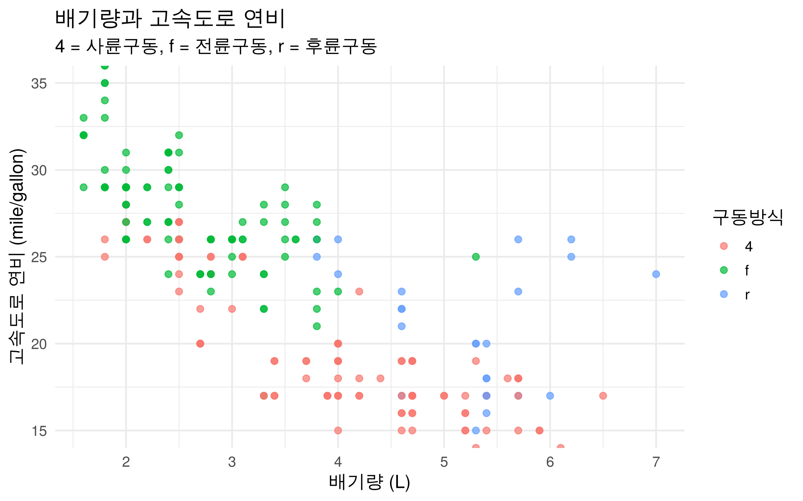
c(15, 35)는 두 숫자를 묶으며 여기서는 아래·위 경계를 정합니다. coord_cartesian()은 화면에 보이는 구간을 확대합니다. scale_y_continuous(limits = c(15, 35))는 기본적으로 범위 밖 값을 결측 처리해 추세선 같은 통계 계산에도 영향을 줄 수 있습니다. 일부 구간의 확대가 목적이라면 coord_cartesian()을 사용합니다. 막대그래프는 길이로 크기를 비교하므로 기준점 0을 잘라 차이를 과장하지 않도록 합니다.
scale_x_log10()은 양수인 가로축 값을 로그 척도로 바꾸는 별도 기능입니다. 값이 여러 자릿수에 걸쳐 퍼진 자료에서 쓸 수 있지만, 0이나 음수에는 그대로 적용할 수 없으며 축 해석도 달라집니다. 이번 기초 실습에서는 일반 축을 사용합니다.
2.5 스포츠 측정 자료의 시각화
앞에서 살펴본 시각화 방법을 스포츠 측정 자료에 적용합니다. 다음은 운동 참여자 8명의 집단, 악력, 점프 높이로 구성된 가상 자료입니다. 분석 절차를 설명하기 위해 작성한 값으로, 실제 연구 결과나 평가 기준을 의미하지 않습니다.
sports <- data.frame(
id = 1:8,
group = c("A", "A", "A", "A", "B", "B", "B", "B"),
grip_kg = c(28, 32, 35, 30, 38, 42, 36, 40),
jump_cm = c(31, 35, 33, 29, 38, 42, 34, 40)
)
sports id group grip_kg jump_cm
1 1 A 28 31
2 2 A 32 35
3 3 A 35 33
4 4 A 30 29
5 5 B 38 38
6 6 B 42 42
7 7 B 36 34
8 8 B 40 40data.frame()은 각 변수를 열로 갖는 데이터프레임을 생성합니다. c()는 여러 값을 하나의 벡터로 결합하며, 1:8은 1부터 8까지의 정수 수열입니다. 예제의 각 열은 8개의 값으로 구성됩니다. group은 집단, grip_kg는 악력(kg), jump_cm는 점프 높이(cm)를 나타냅니다.
ggplot(sports, aes(x = grip_kg, y = jump_cm, color = group)) +
geom_point(size = 3) +
labs(
title = "악력과 점프 높이의 관계",
subtitle = "문법 연습용 가상 자료 · 8명",
x = "악력 (kg)", y = "점프 높이 (cm)", color = "집단"
) +
theme_minimal()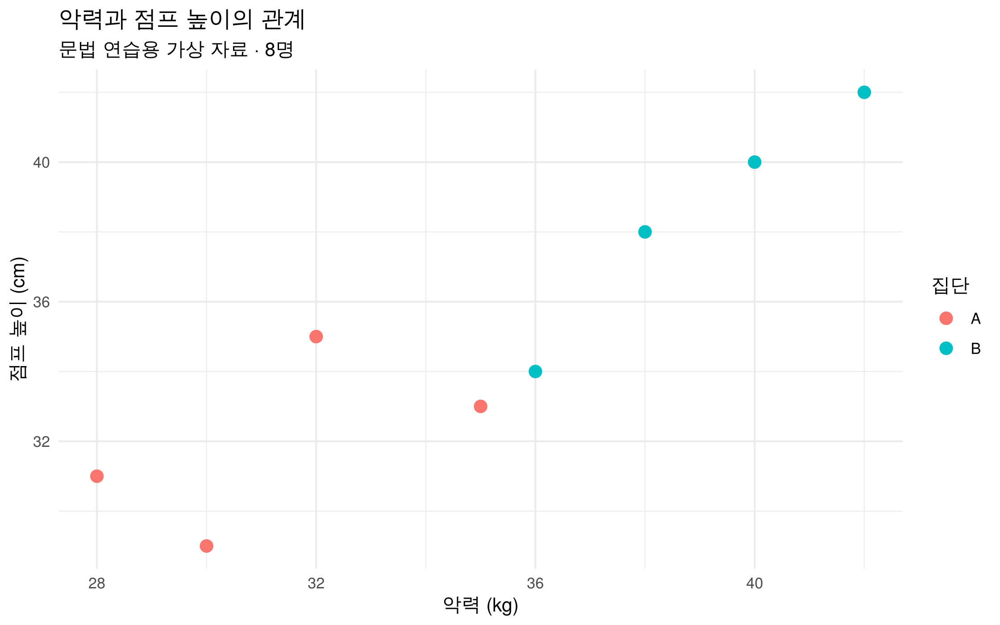
facet_wrap(~ group)을 추가하면 집단별 산점도를 별도의 패널에 배치할 수 있습니다. 자료와 변수명이 달라져도 데이터 지정, 미적 요소의 매핑, 도형과 설명 요소의 추가라는 그래프 작성 구조는 동일하게 적용됩니다.